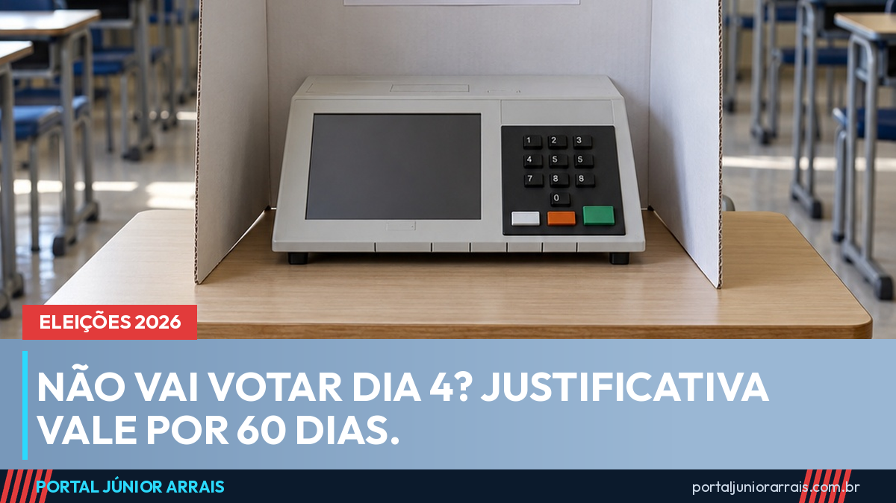

Não vai votar dia 4? Justificativa tem 60 dias, e quem não justifica perde acesso a serviços

Falta uma semana para o primeiro turno, em 4 de outubro, e muita gente já sabe que não vai conseguir votar — por viagem, trabalho, doença ou porque está longe do domicílio eleitoral. Não votar não é crime, mas o voto é obrigatório para quem tem entre 18 e 70 anos, e a ausência precisa ser justificada ou paga. A regra do Tribunal Superior Eleitoral é simples: 60 dias depois de cada turno para justificar. Para o primeiro turno, o prazo termina em 3 de dezembro de 2026; se houver segundo turno, em 25 de outubro, a justificativa dessa segunda falta vai até 8 de janeiro de 2027. Cada turno é uma eleição separada, e cada falta precisa da sua justificativa.
Como a justificativa funciona
- No dia da eleição, das 8h às 17h: quem está fora do seu município pode justificar pelo aplicativo e-Título ou preencher o formulário de papel em qualquer seção eleitoral ou mesa receptora de justificativa. Não precisa apresentar motivo nem documento comprobatório;
- Depois da eleição, dentro dos 60 dias: a justificativa passa a exigir um motivo e um comprovante (atestado, declaração do empregador, passagem), e é analisada por um juiz eleitoral, que pode aceitar ou não;
- Quem está no exterior e tem título no Brasil tem 30 dias contados da volta ao país;
- Quem não justificou nem tem comprovante pode simplesmente pagar a multa, que é de valor baixo por turno, e fica em dia.
Idoso com mais de 70 anos, jovem de 16 e 17 anos e analfabeto têm voto facultativo: para eles não há multa nem justificativa a fazer.
O que acontece com quem ignora
Enquanto a situação não é regularizada — nem justificativa, nem multa —, o eleitor não consegue tirar passaporte nem carteira de identidade, não toma posse em concurso público, não se matricula em escola ou universidade pública, não recebe salário de cargo público e não obtém a certidão de quitação eleitoral, que é exigida em vários serviços. Quem falta a três eleições seguidas (cada turno conta como uma) sem justificar nem pagar tem o título cancelado, e aí o CPF pode ficar com pendência.
Um ponto que gera muita dúvida no público deste portal: o Bolsa Família, o BPC e a aposentadoria não são cortados por falta de voto. O portal já explicou isso em detalhe na matéria não votar não corta Bolsa Família, BPC nem INSS. O que a pendência eleitoral trava são os serviços listados acima, e não o benefício que já está concedido. Quem vai votar, por outro lado, já faz a prova de vida do INSS com o registro da biometria na urna.
Antes do dia 4
Se a intenção é votar, vale conferir agora onde fica a seção e se a situação do título está regular — o portal mostrou o que pode e o que não pode no dia da votação. Quem for trabalhar como mesário tem direito a folga pelo dobro dos dias.
Cuidado com golpe
Nesta semana aumenta a circulação de mensagens com cara de aviso oficial: "seu título foi cancelado, regularize pelo link", "multa eleitoral pendente, pague agora por Pix" ou "confirme seus dados para votar". A Justiça Eleitoral não cobra multa por Pix em link de mensagem, não cancela título por SMS e não pede senha. O portal já mostrou como saber se um aviso do TSE é falso.
Se você descobriu uma pendência antiga que está travando um documento, uma matrícula ou a posse em concurso, procure um profissional de sua confiança para entender o que está pendente e como regularizar com segurança.
Conteúdo informativo — não substitui orientação individualizada sobre o seu caso.
Júnior Arrais · Editor do Portal Júnior Arrais
Comunicador de Ubá (MG). Escreve todos os dias sobre benefícios sociais, INSS, trabalho e economia do dia a dia, a partir do Diário Oficial, de portarias e de fontes oficiais, em linguagem simples. Conheça a linha editorial e a política de correções do portal.